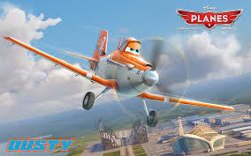
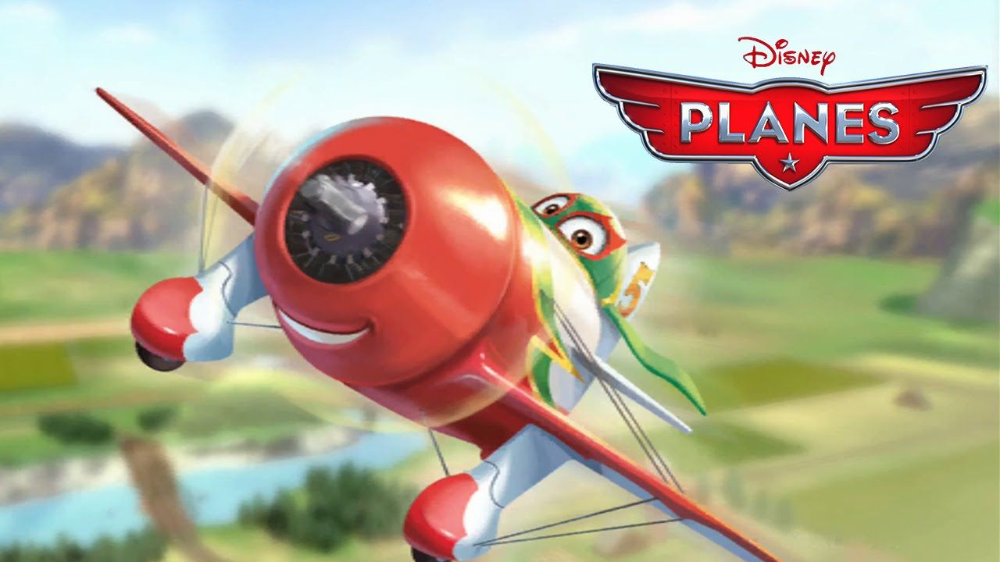
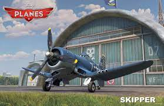

Planes Characters
Dusty Crophopper
A speedy cropduster with dreams of becoming a professional plane racer
el chupacabra
A speedy plane from Mexico
Ripslinger
The previous fastest plane in the world before dusty came along
Skipper
Dusty's mentor as well as his father figure
